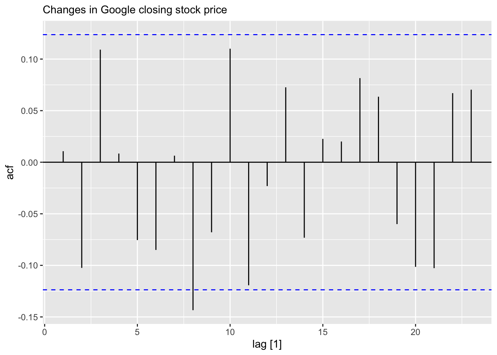
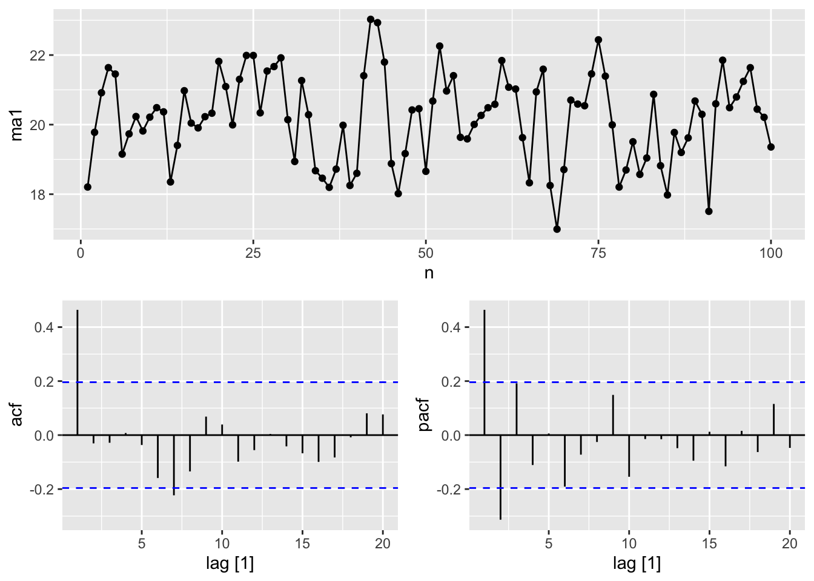
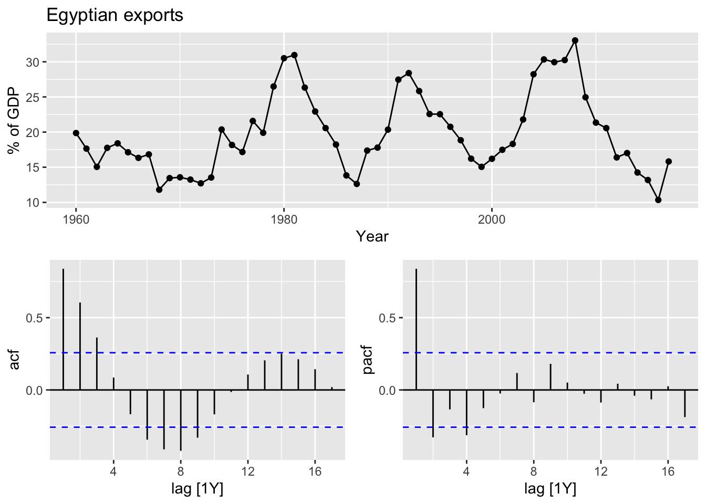
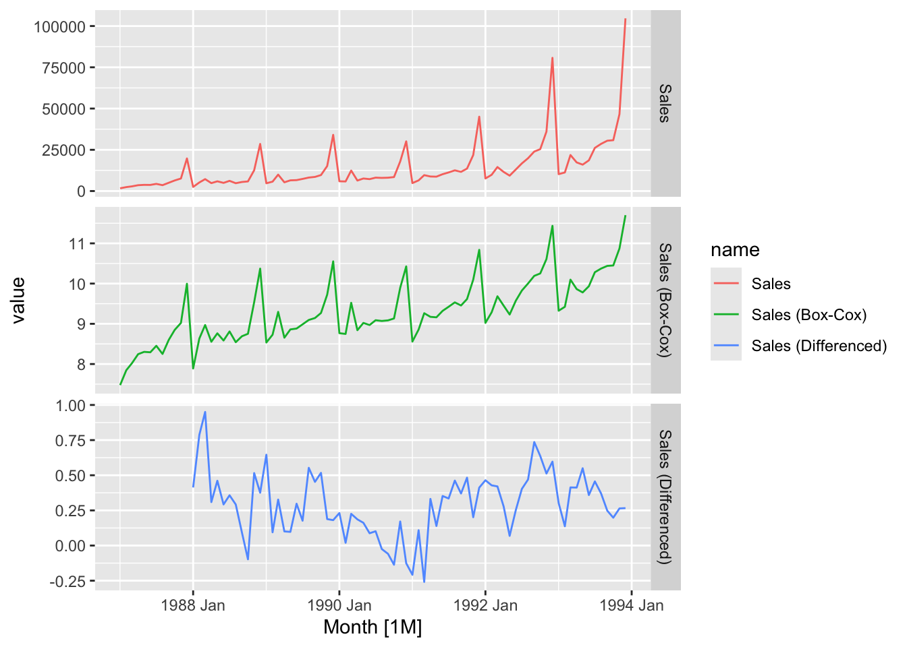
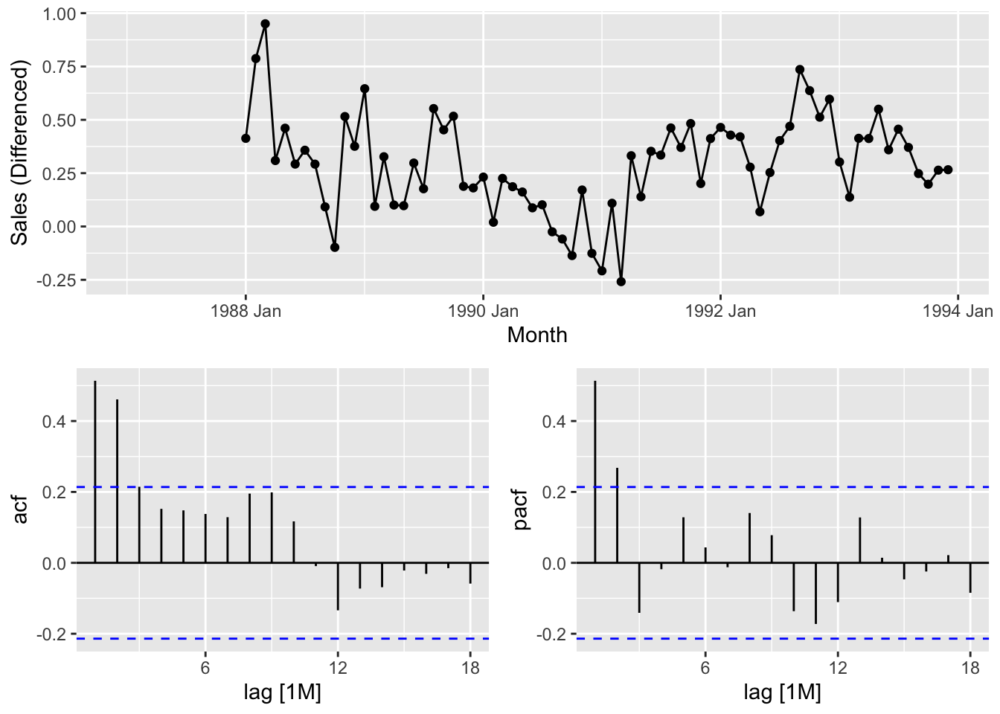
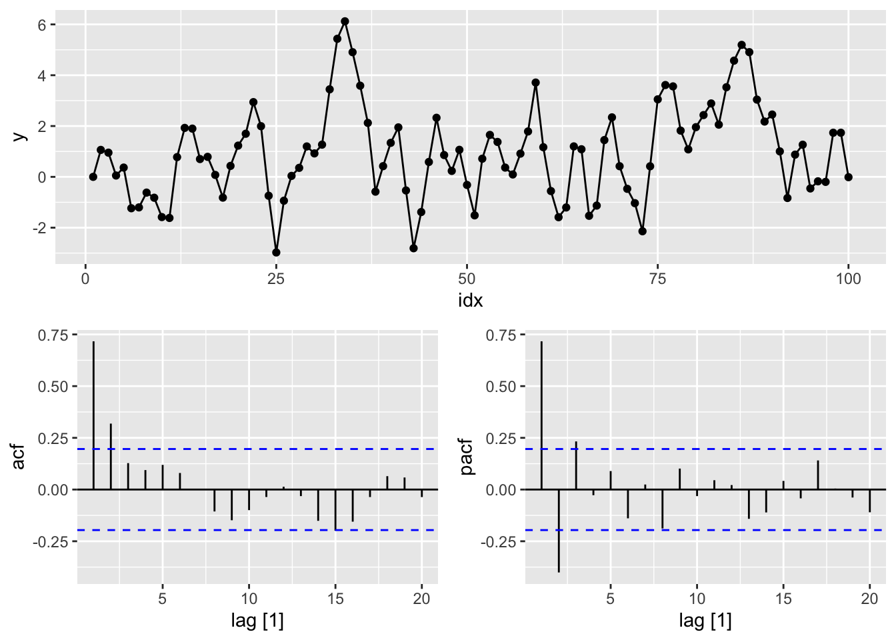

Chapter 9 ARIMA models
# loading libraries
library(tsibble)
library(tsibbledata)
library(tidyverse)
# to read data
library(rio)
library(ggplot2)
library(fabletools)
library(feasts)
library(fpp3)
library(latex2exp)
library(forecast)9.1 Stationarity and differencing
A stationary series is:
- Roughly horizontal => no trend
- Constant variance
- No patterns predictable in the long-term => no seasonality

- Non-stationary: trend
- Stationary
- Non-stationary: trend
- Non-stationary: seasonality
- Non-stationary: trend
- Non-stationary: trend
- Stationary, cycling
- Non-stationary: seasonality
- Non-stationary: seasonality, trend, increasing variance
So stationary series has no predictable patters in the long-term.
- Transformation helps to stabilize the variance
- For ARIMA modelling, we also need to stabilize the mean
Identifying non-stationary series:
- Time plot
- The ACF of stationary data drops to zero relatively quickly.
- The ACF of non-stationary data decreases slowly.
- For non-stationary data, the value of \(r_1\) is often large and positive.
9.1.1 Differencing
Observe a plot.
google_2018 <- gafa_stock |>
filter(Symbol == 'GOOG', year(Date) == 2018)
google_2018 |>
autoplot(Close) +
labs(y = 'Closing stock price ($USD)', title = 'Google closing stock price')Observe an ACF.
google_2018 |>
ACF(Close) |>
autoplot() +
labs(title = 'ACF', subtitle = "Google closing stock price")## Warning: Provided data has an irregular interval, results should be treated with caution. Computing ACF by observation.Observations:
Slow decreasing
Large and positive ACF at the first lag.
Observe an ACF of the differenced data.
google_2018 |>
mutate(close_diff = difference(Close)) |>
autoplot(close_diff) +
labs(subtitle = 'Change in google closing stock price ($USD)')## Warning: Removed 1 row containing missing values or values outside the scale range (`geom_line()`).google_2018 |>
mutate(close_diff = difference(Close)) |>
ACF(close_diff) |>
autoplot() + labs(subtitle = "Changes in Google closing stock price")## Warning: Provided data has an irregular interval, results should be treated with caution. Computing ACF by observation.
Transformations such as logarithms can help to stabilise the variance of a time series. Differencing can help stabilise the mean of a time series by removing changes in the level of a time series, and therefore eliminating (or reducing) trend and seasonality.
For a stationary time series, the ACF will drop to zero relatively quickly, while the ACF of non-stationary data decreases slowly.
The formal test to check data stationarity:
Ljung-Box test: + H0: There is no autocorrelation in the time series data at the specified lags. + H1: There is autocorrelation in the time series data at the specified lags. This means that some autocorrelation exists, indicating that the residuals are not independent.
## # A tibble: 1 × 3
## Symbol lb_stat lb_pvalue
## <chr> <dbl> <dbl>
## 1 GOOG 7.91 0.637\(p\)-value = 0.6, we are fail to reject \(H_0\).
Differencing:
- Differencing helps to stabilize the mean
- The differenced series is the change between each observation in the original series: \(y'_t = y_t - y_{t-1}\)
- The4 differenced series will have only \(T-1\) values since it is not possible to calculate a difference \(y'_1\) for the first observation
9.1.2 Second-order differencing
- Occasionally the differenced data will not appear stationaty and it may be necessary to difference the data second time:
\[ y''_t = y'_t - y'_{t-1} = (y_t - y_{t-1}) - (y_{t-1} - y_{t-2}) = y_t - 2y_{t-1} + y_{t-2} \]
9.1.3 Seasonal differencing
- A seasonal differencing is the differencing between an observation and the corresponding observation from the previous period.
\[ y'_t = y_t - y_{t-m} \]
where \(m\) is a number of seasons.
- For monthly data \(m\) = 12
- For quarterly data \(m\) = 4
- Seasonal differenced series will have \(T-m\) observations.
- The series is non-stationary
- The variance is changing, it is lower at the earlier observations and higher at the last ones.
Apply log transformation to stabilize the variance:
Deal with the seasonal component:
## Warning: Removed 12 rows containing missing values or values outside the scale range (`geom_line()`).It is possibly stationary. Apply formal tests.
a10 |>
rename(`Sales ($ million)` = Cost) |>
mutate(`Log Sales` = log(`Sales ($ million)`),
`Annual change in log sales` = difference(`Log Sales`, 12)) |>
pivot_longer(cols = c(`Sales ($ million)`,
`Log Sales`,
`Annual change in log sales`)) |>
autoplot(value) +
facet_grid(factor(name) ~ ., scales = 'free_y') +
labs(title = 'Antidiabetic drug sales')## Warning: Removed 12 rows containing missing values or values outside the scale range (`geom_line()`).Sometimes it is necessary to take both a seasonal difference and a first difference to obtain stationary data.
h02 <- PBS |>
filter(ATC2 == 'H02') |>
summarise(Cost = sum(Cost) / 1e6) |>
rename(`Sales ($million)` = Cost)
h02 |>
autoplot(`Sales ($million)`) +
labs(title = 'Corticosteroid drug sales', subtitle = 'Raw data')- Data is non-stationary
- The variance is unstable during the series.
Transform the data to stabilize the variance.
h02 <- h02 |>
mutate(`Log Sales` = log(`Sales ($million)`))
h02 |>
autoplot(`Log Sales`) +
labs(title = 'Corticosteroid drug sales', subtitle = 'Log Sales data')- The variance is stable
- There is strong seasonality in the series
Apply seasonal differencing to the logged data.
## [1] 12h02 <- h02 |>
mutate(`Annual change in log Sales` = difference(`Log Sales`, 12))
h02 |>
autoplot(`Annual change in log Sales`) +
labs(title = 'Corticosteroid drug sales', subtitle = 'Annual change in log Sales')## Warning: Removed 12 rows containing missing values or values outside the scale range (`geom_line()`).- Seasonal differenced data is closer to being stationary
- Remaining non-stationarity can be removed with further first difference
Apply the first difference to the annual change.
h02 <- h02 |>
mutate(`Doubly differenced log Sales` = difference(`Annual change in log Sales`, 1))
h02 |>
autoplot(`Doubly differenced log Sales`) +
labs(title = 'Corticosteroid drug sales', subtitle = 'Doubly differenced log Sales')## Warning: Removed 13 rows containing missing values or values outside the scale range (`geom_line()`).9.1.4 Unit root tests
These are statistical hypothesis tests of stationarity that are designed for determining whether differencing is required.
- Augment Dickey Fuller test:
- \(H_0\): The data are non-stationary
- \(H_A\): The data are stationary
- Kwiatkowski-Phillips-Schmidt-Shin (KPSS) test:
- \(H_0\): The data are stationary
- \(H_A\): The data are non-stationary
If \(p\)-value is less than 0.05 in KPSS test, it suggests that differencing is required.
## # A tibble: 1 × 3
## Symbol kpss_stat kpss_pvalue
## <chr> <dbl> <dbl>
## 1 GOOG 3.56 0.01\(p\)-value = 0.01 => \(H_0\) is rejected and the data are not stationary.
## # A tibble: 1 × 3
## Symbol kpss_stat kpss_pvalue
## <chr> <dbl> <dbl>
## 1 GOOG 0.0989 0.1The differenced data are stationary now.
## # A tibble: 1 × 2
## Symbol ndiffs
## <chr> <int>
## 1 GOOG 1One difference is required to make the google_2015 data stationary.
To determine whether seasonal differencing is required use unitroot_ns. No seasonal differences are suggested if \(F_S < 0.64\), otherwise one seasonal difference is suggested.
aus_total_retail <- aus_retail |>
summarise(Turnover = sum(Turnover))
aus_total_retail |>
mutate(log_turnover = log(Turnover)) |>
features(log_turnover, unitroot_nsdiffs)## # A tibble: 1 × 1
## nsdiffs
## <int>
## 1 1aus_total_retail |>
mutate(log_turnover = difference(log(Turnover), 12)) |>
features(log_turnover, unitroot_ndiffs)## # A tibble: 1 × 1
## ndiffs
## <int>
## 1 19.2 Backshift notation
Shifting the data back one period:
\[ By_t = y_{t-1} \]
Shifting the data back two periods:
\[ B(By_t) = B^2y_t = y_{t-1} \] Shifting the data back \(m\) periods:
\[ B^my_t = y_{t-m} \]
A first difference:
\[ y'_t = y_t - y_{t-1} = y_t - By_t = (1-B)y_t \]
Second-order differences:
\[ y''_t = (y_t - y_{t-1}) - (y_{t-1} - t_{t-2}) = y_t - y_{t-1} - y_{t-1} + y_{t-2} = y_t - 2y_{t-1} + y_{t-2} = (1-2B + B^2)y_t = (1-B)^2y_t \] \(d\)th-order difference:
\[ (1 - B)^dy_t \] A seasonal difference followed by a first difference:
\[ (1-B)(1-B^m)y_t = (1-B-B^m+B^{m+1})y_t = y_t - y_{t-1} - y_{t-m} + y_{t-m-1} \]
9.3 Autoregressive (AR) models
In an autoregression model a linear combionation of past values of the variable are used.
Autoregression model AR(p) of order \(p\):
\[ y_t = c + \phi_1y_{t-1} + \phi_2y_{t-2} +...+\phi_ty_{t-p} + \varepsilon_t \]
9.3.1 AR(1) model
An autoregressive model of order 1.
\[ y_t = c + \phi_1y_{t-1} + \varepsilon_t \]
- When \(\phi_1 = 0\), \(y_t\) is equivalent to a white noise: \(y_t = \varepsilon_t\)
- When \(\phi_1 = 1\) and \(c = 0\), \(y_t\) is equivalent to a random walk: \(y_t = y_{t-1} + \varepsilon_t\)
- When \(\phi_1 = 1\) and \(c \ne 0\), \(y_t\) is equivalent to a random walk with drift: \(y_t = c + y_{t-1} + \varepsilon_t\)
- Constraints: \(-1 < \phi_1 < 1\), the closer \(\phi_1\) is to the bounds the more the process wanders above or below it’s unconditional mean
- When \(\phi < 0\), \(y_t\) tends to oscillate around the mean.
- \(c\) is related to the mean of \(y_t\)
- \(\mathbb E(y_t) = \mu\)
- \(\mu = c + \phi_1\mu\)
- \(\mu = \frac c {1-\phi_1}\)
- AR(1): ARIMA(1, 0, 0)
9.3.2 AR(2) model
Constraints:
- \(-1 < \phi_2 < 1, \phi_1+\phi_2 < 1, \phi_2 - \phi_1 < 1\)
ar_processes <- tibble(
n = 1:100,
# y_t = 18 - 0.8 * y_t-1 + epsilon_t
ar1 = arima.sim(n = 100,
model = list(ar = -0.8)) + 18,
# y_t = 8 + 1.3 * y_t-1 - 0.7 * y_t-2 + epsilon_t
ar2 = arima.sim(n = 100,
model = list(ar = c(1.3, -0.7)))) |>
as_tsibble(index = n)
ar_processes |>
pivot_longer(cols = c(ar1, ar2)) |>
autoplot(value) +
facet_grid(factor(name) ~ ., scales = 'free_y')9.4 Moving average models
A moving average model MA(q) uses past forecast errors in a regression-like model.
\[ y_t = c + \varepsilon_t + \theta_1\varepsilon_{t-1}+ \theta_2\varepsilon_{t-2} +...+ \theta_q\varepsilon_{t-q} \]
ma_processes <- tibble(
n = 1:100,
# y_t = 20 + epsilon_t + 0.8 * epsilon_t-1
ma1 = arima.sim(n = 100,
model = list(ma = 0.8)) + 20,
# y_t = epsilon_t - epsilon_t-1 + 0.8 * epsilon_t-2
ma2 = arima.sim(n = 100,
model = list(ma = c(-1, 0.8)))) |>
as_tsibble(index = n)
ma_processes |>
pivot_longer(cols = c(ma1, ma2)) |>
autoplot(value) +
facet_grid(factor(name) ~ ., scales = 'free_y')
9.5 Non-seasonal ARIMA models
A non-seasonal ARIMA model (AutoRegressive Integrated Moving Average) can be written as
\[ y'_t = c + \phi_1y'_{t-1} +...+\phi_py'_{t-p} + \theta_1\varepsilon_{t-1}+...+\theta_q\varepsilon_{t-q} + \varepsilon_t \] where \(y'_t\) is the differenced series and is called an \(ARIMA(p, d, q)\) model where
- \(p\) = order of autoregressive part
- \(d\) = degree of first differencing involved
- \(q\) = order of the moving average part
Special cases of ARIMA models:
- White noise: ARIMA(0,0,0) with no constant
- Random walk: ARIMA(0,1,0) with no constant
- Random walk with drift: ARIMA(0,1,0) with a constant
- Autoregression: ARIMA(p,0,0)
- Moving average: ARIMA(0,0,q)
9.5.1 Example: Egyptian exports
global_economy |>
filter(Code == 'EGY') |>
autoplot(Exports) +
labs(y = '% of GDP', title = 'Egyptian exports')global_economy |>
filter(Code == 'EGY') |>
gg_tsdisplay(Exports, plot_type = 'partial') +
labs(y = '% of GDP', title = 'Egyptian exports')
Find the best model.
## Series: Exports
## Model: ARIMA(2,0,1) w/ mean
##
## Coefficients:
## ar1 ar2 ma1 constant
## 1.6764 -0.8034 -0.6896 2.5623
## s.e. 0.1111 0.0928 0.1492 0.1161
##
## sigma^2 estimated as 8.046: log likelihood=-141.57
## AIC=293.13 AICc=294.29 BIC=303.439.5.2 ACF and PACF plots
Using ACF and PACF plots to determine the initial values of \(p\) and \(q\).
Interpretation of ACF and PACF to find initial \(p\) and \(q\) values:
- The data might follow an \(ARIMA(p, d, 0)\) if:
- the ACF demonstrates exponentially decaying of sinusoidal
- the PACF demonstrates a significant spike at lag \(p\) abd none beyond lag \(p\)
- The data might follow an \(ARIMA(0, d, q)\) if:
- the PACF demonstrates exponentially decaying of sinusoidal
- the ACF demonstrates a significant spike at lag \(q\) abd none beyond lag \(q\)
Find the best model:
# 1. plot the data and determine the initial values
eg_data <- global_economy |>
filter(Code == 'EGY')
eg_data |> gg_tsdisplay(Exports, plot_type = 'partial')## Series: Exports
## Model: ARIMA(2,0,1) w/ mean
##
## Coefficients:
## ar1 ar2 ma1 constant
## 1.6764 -0.8034 -0.6896 2.5623
## s.e. 0.1111 0.0928 0.1492 0.1161
##
## sigma^2 estimated as 8.046: log likelihood=-141.57
## AIC=293.13 AICc=294.29 BIC=303.439.6 Estimation and order selection
Good models are obtained by minimising the AIC, AICc or BIC. Using the AICc is more prefered.
It is important to note that these information criteria tend not to be good guides to selecting the appropriate order of differencing (\(d\)) of a model, but only for selecting the values of \(p\) and \(q\).
9.7 ARIMA modelling in fable
9.7.1 How does ARIMA() work?
Hyndman-Khandakar algorithm for automatic ARIMA modelling:
Determine the number of differences \(0 \le d \le 2\) using repeated KPSS tests:
\(H_0\): The time series is stationary.
\(H_1\): The time series is non-stationary.
If \(H_0\) is not rejected, then work with the origin series, otherwise (If \(H_0\) is rejected, then a differencing is needed), apply the test to the first differenced series. Repeat the step, if \(H_0\) is rejected, then work with the second differenced test, otherwise, work with the first differenced series.Determine the values of \(p\) and \(q\) by minimising the AICc after diffferencing the data \(d\) times using a stepwise search:
- Fit initial models: \(ARIMA(0:2, d, 0:2)\) + constant (if \(d \le 1\)). If \(d \le 1\) then fitted one more model \(ARIMA(0, d, 0)\) without constant.
- The best model with the smallest AICc is set as current model.
- Consider variations of the current model:
try \(p \pm 1\)
try \(q \pm 1\)
include\exclude a constant from the current model The variation of the model which AICc is the smallest is set as the new current model.
- Repeat Step 2 (c.) until no lower AICc can be found.

9.7.3 Example: Central African Republic exports
- Plot the data.
global_economy |>
filter(Code == 'CAF') |>
autoplot(Exports) +
labs(title = 'Central African Republic exports', y = '% of GDP')The variance is not changing, so a Box-Cox transformation does not needed.
Teh data are not stationary, take a first difference of the data.
## Warning: Removed 1 row containing missing values or values outside the scale range (`geom_line()`).## Warning: Removed 1 row containing missing values or values outside the scale range (`geom_point()`).- The differenced data are now stationary.
- The PACF suggests an AR(2) model, ARIMA(2,1,0) is an initial model
- The ACF suggests an MA(3) model, ARIMA(0, 1, 3) is an alternative model
CAF_fit <- global_economy |>
filter(Code == 'CAF') |>
model(arima210 = ARIMA(Exports ~ pdq(2,1,0)),
arima013 = ARIMA(Exports ~ pdq(0,1,3)),
stepwise = ARIMA(Exports),
search = ARIMA(Exports, stepwise = FALSE))
CAF_fit |>
pivot_longer(!Country, names_to = 'Model Name',
values_to = 'Orders')## # A mable: 4 x 3
## # Key: Country, Model Name [4]
## Country `Model Name` Orders
## <fct> <chr> <model>
## 1 Central African Republic arima210 <ARIMA(2,1,0)>
## 2 Central African Republic arima013 <ARIMA(0,1,3)>
## 3 Central African Republic stepwise <ARIMA(2,1,2)>
## 4 Central African Republic search <ARIMA(3,1,0)>- ARIMA(3,1,0) has lowest AICc
## # A tibble: 4 × 6
## .model sigma2 log_lik AIC AICc BIC
## <chr> <dbl> <dbl> <dbl> <dbl> <dbl>
## 1 search 6.52 -133. 274. 275. 282.
## 2 arima210 6.71 -134. 275. 275. 281.
## 3 arima013 6.54 -133. 274. 275. 282.
## 4 stepwise 6.42 -132. 274. 275. 284.- The residuals look like white noise.
A portmanteau test (with K = p + q = 3 + 0 = 3) suggests that the residuals are white noise too.
## # A tibble: 1 × 4
## Country .model lb_stat lb_pvalue
## <fct> <chr> <dbl> <dbl>
## 1 Central African Republic search 5.75 0.569- Forecasts from the model.
9.8 Forecasting
9.8.1 Prediction intervals
The prediction intervals for ARIMA models are based on assumptions that the residuals are uncorrelated and normally distributed. If either of these assumptions does not hold, then the prediction intervals may be incorrect. For this reason, always plot the ACF and histogram of the residuals to check the assumptions before producing prediction intervals.
If the residuals are uncorrelated but not normally distributed, then bootstrapped intervals can be obtained instead. This is easily achieved by simply adding bootstrap=TRUE in the forecast() function.
9.9 Seasonal ARIMA models
9.9.1 ARIMA Model Notation
\[ \text{ARIMA} \quad \left( \underbrace{(p, d, q)}_{\text{Non-seasonal part of the model}}, \underbrace{(P, D, Q)_m}_{\text{Seasonal part of the model}} \right) \]
where \(m\) is the seasonal period (number of observations per year).
9.9.2 ACF/PACF
The seasonal part of an AR or MA model will be seen in the seasonal lags of the PACF and ACF.
\(ARIMA(0,0,0)(0,0,1)_{12}\) model:
- ACF: a significant spike at lag 12 only
- PACF: exponential decay in the seasonal lags (12, 24, 36,…)
\(ARIMA(0,0,0)(1,0,0)_{12}\) model:
- ACF: exponential decay in the seasonal lags (12, 24, 36,…)
- PACF: a single significant spike at lag 12
9.9.3 Example: Monthly US leisure and hospitality employment
leisure <- us_employment |>
filter(Title == "Leisure and Hospitality",
year(Month) > 2000) |>
mutate(Employed = Employed/1000) |>
select(Month, Employed)
autoplot(leisure, Employed) +
labs(title = "US employment: leisure and hospitality",
y="Number of people (millions)")leisure |>
gg_tsdisplay(difference(Employed, 12),
plot_type='partial', lag=36) +
labs(title="Seasonally differenced", y="")## Warning: Removed 12 rows containing missing values or values outside the scale range (`geom_line()`).## Warning: Removed 12 rows containing missing values or values outside the scale range (`geom_point()`).leisure |>
gg_tsdisplay(difference(Employed, 12) |> difference(),
plot_type='partial', lag=36) +
labs(title = "Double differenced", y="")## Warning: Removed 13 rows containing missing values or values outside the scale range (`geom_line()`).## Warning: Removed 13 rows containing missing values or values outside the scale range (`geom_point()`).fit <- leisure |>
model(
arima012011 = ARIMA(Employed ~ pdq(0,1,2) + PDQ(0,1,1)),
arima210011 = ARIMA(Employed ~ pdq(2,1,0) + PDQ(0,1,1)),
arima212111 = ARIMA(Employed ~ pdq(2,1,2) + PDQ(1,1,1)),
auto = ARIMA(Employed, stepwise = FALSE, approximation = FALSE)
)
fit |>
pivot_longer(everything(), names_to = "Model name",
values_to = "Orders")## # A mable: 4 x 2
## # Key: Model name [4]
## `Model name` Orders
## <chr> <model>
## 1 arima012011 <ARIMA(0,1,2)(0,1,1)[12]>
## 2 arima210011 <ARIMA(2,1,0)(0,1,1)[12]>
## 3 arima212111 <ARIMA(2,1,2)(1,1,1)[12]>
## 4 auto <ARIMA(2,1,0)(1,1,1)[12]>## # A tibble: 4 × 6
## .model sigma2 log_lik AIC AICc BIC
## <chr> <dbl> <dbl> <dbl> <dbl> <dbl>
## 1 auto 0.00142 395. -780. -780. -763.
## 2 arima210011 0.00145 392. -776. -776. -763.
## 3 arima212111 0.00143 395. -776. -775. -752.
## 4 arima012011 0.00146 391. -775. -775. -761.## # A tibble: 1 × 3
## .model lb_stat lb_pvalue
## <chr> <dbl> <dbl>
## 1 auto 16.6 0.6809.10 ARIMA vs ETS
9.10.1 Comparing ARIMA() and ETS() on non-seasonal data
aus_economy <- global_economy |>
filter(Code == "AUS") |>
mutate(Population = Population/1e6)
aus_economy |>
slice(-n()) |>
stretch_tsibble(.init = 10) |>
model(
ETS(Population),
ARIMA(Population)
) |>
forecast(h = 1) |>
accuracy(aus_economy) |>
select(.model, RMSE:MAPE)## # A tibble: 2 × 5
## .model RMSE MAE MPE MAPE
## <chr> <dbl> <dbl> <dbl> <dbl>
## 1 ARIMA(Population) 0.194 0.0789 0.277 0.509
## 2 ETS(Population) 0.0774 0.0543 0.112 0.3279.10.2 Comparing ARIMA() and ETS() on seasonal data
cement <- aus_production |>
select(Cement) |>
filter_index("1988 Q1" ~ .)
train <- cement |> filter_index(. ~ "2007 Q4")## Series: Cement
## Model: ARIMA(1,0,1)(2,1,1)[4] w/ drift
##
## Coefficients:
## ar1 ma1 sar1 sar2 sma1 constant
## 0.8886 -0.2366 0.081 -0.2345 -0.8979 5.3884
## s.e. 0.0842 0.1334 0.157 0.1392 0.1780 1.4844
##
## sigma^2 estimated as 11456: log likelihood=-463.52
## AIC=941.03 AICc=942.68 BIC=957.35## # A tibble: 1 × 3
## .model lb_stat lb_pvalue
## <chr> <dbl> <dbl>
## 1 ARIMA(Cement) 6.37 0.847## Series: Cement
## Model: ETS(M,N,M)
## Smoothing parameters:
## alpha = 0.7533714
## gamma = 0.0001000093
##
## Initial states:
## l[0] s[0] s[-1] s[-2] s[-3]
## 1694.712 1.031179 1.045209 1.011424 0.9121874
##
## sigma^2: 0.0034
##
## AIC AICc BIC
## 1104.095 1105.650 1120.769## # A tibble: 1 × 3
## .model lb_stat lb_pvalue
## <chr> <dbl> <dbl>
## 1 ETS(Cement) 10.0 0.865bind_rows(
fit_arima |> accuracy(),
fit_ets |> accuracy(),
fit_arima |> forecast(h = 10) |> accuracy(cement),
fit_ets |> forecast(h = 10) |> accuracy(cement)
) |>
select(-ME, -MPE, -ACF1)## # A tibble: 4 × 7
## .model .type RMSE MAE MAPE MASE RMSSE
## <chr> <chr> <dbl> <dbl> <dbl> <dbl> <dbl>
## 1 ARIMA(Cement) Training 100. 79.9 4.37 0.546 0.582
## 2 ETS(Cement) Training 103. 80.0 4.41 0.547 0.596
## 3 ARIMA(Cement) Test 216. 186. 8.68 1.27 1.26
## 4 ETS(Cement) Test 222. 191. 8.85 1.30 1.29cement |>
model(ARIMA(Cement)) |>
forecast(h="3 years") |>
autoplot(cement) +
labs(title = "Cement production in Australia",
y = "Tonnes ('000)")
9.11 Exercises
## Warning: Provided data has an irregular interval, results should be treated with caution. Computing ACF by observation.
## Provided data has an irregular interval, results should be treated with caution. Computing ACF by observation.- ACF: Slowly decaying or very high values for initial lags.
- PACF: Large spike at lag 1, followed by small or zero values at higher lags.
# a.
turk <- global_economy |>
filter(Code == 'TUR')
turk |>
autoplot(GDP) +
labs(title = 'Turkish GDP')## # A tibble: 1 × 3
## Country kpss_stat kpss_pvalue
## <fct> <dbl> <dbl>
## 1 Turkey 1.22 0.01# find optimal lambda for box cox transformation
optimal_lambda <- turk %>%
features(GDP, features = guerrero) %>%
pull(lambda_guerrero)
# stabilize the variance
turk <- turk |>
mutate(transformed_GDP = box_cox(GDP, lambda = optimal_lambda))
# get to know the order of differencing of the transformed (stable variance) data
turk %>%
features(transformed_GDP, features = unitroot_ndiffs)## # A tibble: 1 × 2
## Country ndiffs
## <fct> <int>
## 1 Turkey 1# diff the transformed data
turk <- turk |>
mutate(diff_GDP = difference(transformed_GDP))
# get to know the stationarity of the differenced transformed data
turk |>
features(diff_GDP, features = unitroot_kpss)## # A tibble: 1 × 3
## Country kpss_stat kpss_pvalue
## <fct> <dbl> <dbl>
## 1 Turkey 0.0889 0.1# plot the data
turk |>
select(contains('GDP')) |>
rename(`GDP (Box-Cox)` = transformed_GDP, `GDP (Differenced)` = diff_GDP) |>
pivot_longer(cols = contains('GDP'), names_to = 'name') |>
autoplot(value) +
facet_grid(factor(name) ~ ., scales = 'free_y')## Warning: Removed 1 row containing missing values or values outside the scale range (`geom_line()`).turk |>
select(contains('GDP')) |>
rename(`GDP (Box-Cox)` = transformed_GDP, `GDP (Differenced)` = diff_GDP) |>
gg_tsdisplay(`GDP (Differenced)`, plot_type = 'partial')## Warning: Removed 1 row containing missing values or values outside the scale range (`geom_line()`).## Warning: Removed 1 row containing missing values or values outside the scale range (`geom_point()`).# b.
tas <- aus_accommodation |>
filter(State == 'Tasmania')
tas |>
autoplot(Takings) +
labs(title = 'Accommodation takings in the state of Tasmania')# the data have strong seasonality and variable variance
# 1. Stable the variance by Box-Cox transformation
# 1.1. Find optimal lambda for box cox transformation
optimal_lambda <- tas %>%
features(Takings, features = guerrero) %>%
pull(lambda_guerrero)
# 1.2. Stabilize the variance
tas <- tas |>
mutate(`Takings (Box-Cox)` = box_cox(Takings, lambda = optimal_lambda))
# 2. Get to know the order of seasonal and first differencing is it's needed
# 2.1. Get to know the order of seasonal defferencing
tas |>
features(`Takings (Box-Cox)`, features = unitroot_nsdiffs)## # A tibble: 1 × 2
## State nsdiffs
## <chr> <int>
## 1 Tasmania 1# 2.2 Make seasonal differencing
tas <- tas |>
mutate(`Takings (sdiff)` = difference(`Takings (Box-Cox)`, lag = 4))
# 2.3. Get to know the order of first differencing of seasonal differenced transformed data
tas |>
features(`Takings (sdiff)`, features = unitroot_ndiffs)## # A tibble: 1 × 2
## State ndiffs
## <chr> <int>
## 1 Tasmania 0# 3. Get to know the stationarity of the seasonal differenced transformed data
tas |>
features(`Takings (sdiff)`, features = unitroot_kpss)## # A tibble: 1 × 3
## State kpss_stat kpss_pvalue
## <chr> <dbl> <dbl>
## 1 Tasmania 0.198 0.1# plot the data
tas |>
select(contains('Takings')) |>
rename(`Takings (Differenced)` = `Takings (sdiff)`) |>
pivot_longer(cols = contains('Takings'), names_to = 'name') |>
autoplot(value) +
facet_grid(factor(name) ~ ., scales = 'free_y')## Warning: Removed 4 rows containing missing values or values outside the scale range (`geom_line()`).tas |>
select(contains('Takings')) |>
rename(`Takings (Differenced)` = `Takings (sdiff)`) |>
gg_tsdisplay(`Takings (Differenced)`, plot_type = 'partial')## Warning: Removed 4 rows containing missing values or values outside the scale range (`geom_line()`).## Warning: Removed 4 rows containing missing values or values outside the scale range (`geom_point()`).## # A tibble: 1 × 2
## kpss_stat kpss_pvalue
## <dbl> <dbl>
## 1 1.31 0.01# the data have strong seasonality and variable variance
# 1. Stable the variance by Box-Cox transformation
# 1.1. Find optimal lambda for box cox transformation
optimal_lambda <- souvenirs %>%
features(Sales, features = guerrero) %>%
pull(lambda_guerrero)
# 1.2. Stabilize the variance
souvenirs_2 <- souvenirs |>
mutate(`Sales (Box-Cox)` = box_cox(Sales, lambda = optimal_lambda))
# 2. Get to know the order of seasonal and first differencing is it's needed
# 2.1. Get to know the order of seasonal defferencing
souvenirs_2 |>
features(`Sales (Box-Cox)`, features = unitroot_nsdiffs)## # A tibble: 1 × 1
## nsdiffs
## <int>
## 1 1# 2.2 Make seasonal differencing
souvenirs_2 <- souvenirs_2 |>
mutate(`Sales (sdiff)` = difference(`Sales (Box-Cox)`, lag = 12))
# 2.3. Get to know the order of first differencing of seasonal differenced transformed data
souvenirs_2 |>
features(`Sales (sdiff)`, features = unitroot_ndiffs)## # A tibble: 1 × 1
## ndiffs
## <int>
## 1 0# 3. Get to know the stationarity of the seasonal differenced transformed data
souvenirs_2 |>
features(`Sales (sdiff)`, features = unitroot_kpss)## # A tibble: 1 × 2
## kpss_stat kpss_pvalue
## <dbl> <dbl>
## 1 0.240 0.1# plot the data
souvenirs_2 |>
rename(`Sales (Differenced)` = `Sales (sdiff)`) |>
pivot_longer(cols = contains('Sales'), names_to = 'name') |>
autoplot(value) +
facet_grid(factor(name) ~ ., scales = 'free_y')## Warning: Removed 12 rows containing missing values or values outside the scale range (`geom_line()`).
souvenirs_2 |>
select(contains('Sales')) |>
rename(`Sales (Differenced)` = `Sales (sdiff)`) |>
gg_tsdisplay(`Sales (Differenced)`, plot_type = 'partial')## Warning: Removed 12 rows containing missing values or values outside the scale range (`geom_line()`).## Warning: Removed 12 rows containing missing values or values outside the scale range (`geom_point()`).
myseries <- myseries |>
select(-State, -Industry, -`Series ID`)
# 1. Plot the data
myseries |>
autoplot(Turnover)
## # A tibble: 1 × 2
## kpss_stat kpss_pvalue
## <dbl> <dbl>
## 1 7.20 0.01# the data have strong seasonality and variable variance
# 3. Stable the variance by Box-Cox transformation
# 3.1. Find optimal lambda for box cox transformation
optimal_lambda <- myseries %>%
features(Turnover, features = guerrero) %>%
pull(lambda_guerrero)
# 3.2. Stabilize the variance
myseries <- myseries |>
mutate(`Turnover (Box-Cox)` = box_cox(Turnover, lambda = optimal_lambda))
# 4. Get to know the order of seasonal and first differencing is it's needed
# 4.1. Get to know the order of seasonal defferencing
myseries |>
features(`Turnover (Box-Cox)`, features = unitroot_nsdiffs)## # A tibble: 1 × 1
## nsdiffs
## <int>
## 1 1# 4.2 Make seasonal differencing
myseries <- myseries |>
mutate(`Turnover (Seasonal Difference)` = difference(`Turnover (Box-Cox)`, lag = 12))
# 4.3. Get to know the order of first differencing of seasonal differenced transformed data
myseries |>
features(`Turnover (Seasonal Difference)`, features = unitroot_ndiffs)## # A tibble: 1 × 1
## ndiffs
## <int>
## 1 0# 4.4. Make first differencing
myseries <- myseries |>
mutate(`Turnover (First Difference)` = difference(`Turnover (Seasonal Difference)`))
# 4.5. Get to know the stationarity of the first differenced of the seasonal differenced transformed data
myseries |>
features(`Turnover (First Difference)`, features = unitroot_kpss)## # A tibble: 1 × 2
## kpss_stat kpss_pvalue
## <dbl> <dbl>
## 1 0.0140 0.1# plot the data
myseries |>
rename(`1. Raw data` = Turnover,
`2. Box-Cox` = `Turnover (Box-Cox)`,
`3. Seasonal diff` = `Turnover (Seasonal Difference)`,
`4. First diff` = `Turnover (First Difference)`) |>
pivot_longer(-Month, names_to = 'name') |>
autoplot(value) +
facet_grid(factor(name) ~ ., scales = 'free_y')## Warning: Removed 25 rows containing missing values or values outside the scale range (`geom_line()`).
#a.
y <- numeric(100)
e <- rnorm(100)
for(i in 2:100)
y[i] <- 0.6*y[i-1] + e[i]
sim <- tsibble(idx = seq_len(100), y = y, index = idx)# c.
tsibble(n = 1:100, y = arima.sim(model = list(ma=0.6), n = 100),
index = n) |>
# d.
gg_tsdisplay(y, plot_type = 'partial')# c.
# MA(1) from scratch
y <- numeric(100)
e <- rnorm(100)
for(i in 2:100)
y[i] <- e[i] + 0.6*e[i-1]
sim <- tsibble(idx = seq_len(100), y = y, index = idx)
# d.
sim |>
gg_tsdisplay(y, plot_type = 'partial')set.seed(12345)
# e.
tsibble(n = 1:100, y = arima.sim(model = list(ar=0.6 , ma=0.6), n = 100),
index = n) |>
gg_tsdisplay(y, plot_type = 'partial')# from scratch
# ARMA(1, 1) from scratch
set.seed(12345)
y <- numeric(100)
e <- rnorm(100)
for(i in 2:100)
y[i] <- 0.6*y[i-1] + e[i] + 0.6*e[i-1]
sim <- tsibble(idx = seq_len(100), y = y, index = idx)
sim |>
gg_tsdisplay(y, plot_type = 'partial')
# f.
# AR(2) from scratch
set.seed(12345)
y <- numeric(100)
e <- rnorm(100)
for(i in 3:100)
y[i] <- (-0.8)*y[i-1] + 0.3*y[i-2] + e[i]
sim <- tsibble(idx = seq_len(100), y = y, index = idx)
#g.
sim |>
gg_tsdisplay(y, plot_type = 'partial')train <- aus_airpassengers |>
filter(Year < 2012)
# a.
train |>
model(ARIMA(Passengers, stepwise = FALSE, approximation = FALSE)) |>
report()## Series: Passengers
## Model: ARIMA(0,2,1)
##
## Coefficients:
## ma1
## -0.8756
## s.e. 0.0722
##
## sigma^2 estimated as 4.671: log likelihood=-87.8
## AIC=179.61 AICc=179.93 BIC=182.99train |>
model(ARIMA(Passengers, stepwise = FALSE, approximation = FALSE)) |>
forecast(h=10) |>
autoplot(train)# c.
train |>
model(
auto = ARIMA(Passengers, stepwise = FALSE, approximation = FALSE),
arima010 = ARIMA(Passengers ~ pdq(0,1,0))) |>
forecast(h = 10) |>
autoplot(train)# c-e
train |>
model(
auto = ARIMA(Passengers, stepwise = FALSE, approximation = FALSE),
arima010 = ARIMA(Passengers ~ pdq(0,1,0)),
arima212 = ARIMA(Passengers ~ pdq(2,1,2)),
arima021 = ARIMA(Passengers ~ 1 + pdq(0,2,1))) |>
forecast(h = 10) |>
autoplot(train, level = NULL)## Warning: Model specification induces a quadratic or higher order polynomial trend.
## This is generally discouraged, consider removing the constant or reducing the number of differences.# find US GDP
usa <- global_economy |>
filter(Code == 'USA') |>
select(GDP)
# a.
usa |> gg_tsdisplay()## Plot variable not specified, automatically selected `y = GDP`
optimal_lambda <- usa %>%
features(GDP, features = guerrero) %>%
pull(lambda_guerrero)
optimal_lambda## [1] 0.2819443usa <- usa |>
mutate(GDP_boxcox = box_cox(GDP, lambda=optimal_lambda))
usa |>
gg_tsdisplay(GDP_boxcox, plot_type = 'partial')# b.
# make data stationary
usa |>
mutate(GDP_diff = difference(GDP_boxcox)) |>
gg_tsdisplay(GDP_diff, plot_type = 'partial')## Warning: Removed 1 row containing missing values or values outside the scale range (`geom_line()`).## Warning: Removed 1 row containing missing values or values outside the scale range (`geom_point()`).# it's probably AR(1) process, make an experiment
# c.
usa |>
model(
ar1 = ARIMA(GDP_boxcox ~ pdq(1, 1, 0)), # my bet
ma1 = ARIMA(GDP_boxcox ~ pdq(0, 1, 1)),
arima111 = ARIMA(GDP_boxcox ~ pdq(1,1,1)),
auto = ARIMA(GDP_boxcox, stepwise = F, approximation = F)) |>
glance()## # A tibble: 4 × 8
## .model sigma2 log_lik AIC AICc BIC ar_roots ma_roots
## <chr> <dbl> <dbl> <dbl> <dbl> <dbl> <list> <list>
## 1 ar1 5479. -325. 657. 657. 663. <cpl [1]> <cpl [0]>
## 2 ma1 5689. -326. 659. 659. 665. <cpl [0]> <cpl [1]>
## 3 arima111 5580. -325. 659. 659. 667. <cpl [1]> <cpl [1]>
## 4 auto 5479. -325. 657. 657. 663. <cpl [1]> <cpl [0]># f.
usa |>
model(
ar1 = ARIMA(GDP ~ pdq(1, 1, 0)),
ets_AAN = ETS(GDP ~ error('A') + trend('A') + season('N')),
ets_AAdN = ETS(GDP ~ error('A') + trend('Ad') + season('N')),) |>
forecast(h = 20) |>
autoplot(usa, level = NULL)## Plot variable not specified, automatically selected `y = Arrivals`- The variance is not constant
- There is strong seasonality in the data
- There is trend in the data
# b.
# transform the data to make the variance constant
optimal_lambda <- uk %>%
features(Arrivals, features = guerrero) %>%
pull(lambda_guerrero)
uk <- uk |>
mutate(Arrivals_boxcox = box_cox(Arrivals, lambda = optimal_lambda))
uk |> gg_tsdisplay(Arrivals_boxcox)## # A tibble: 1 × 3
## Origin kpss_stat kpss_pvalue
## <chr> <dbl> <dbl>
## 1 UK 2.43 0.01## # A tibble: 1 × 2
## Origin nsdiffs
## <chr> <int>
## 1 UK 1uk <- uk |>
mutate(Arrivals_sdiff = difference(Arrivals_boxcox, lag = 4))
uk |>
features(Arrivals_sdiff, features = unitroot_kpss)## # A tibble: 1 × 3
## Origin kpss_stat kpss_pvalue
## <chr> <dbl> <dbl>
## 1 UK 0.514 0.0385## # A tibble: 1 × 2
## Origin ndiffs
## <chr> <int>
## 1 UK 1uk <- uk |>
mutate(Arrivals_diff = difference(Arrivals_sdiff))
uk |>
features(Arrivals_diff, features = unitroot_kpss)## # A tibble: 1 × 3
## Origin kpss_stat kpss_pvalue
## <chr> <dbl> <dbl>
## 1 UK 0.0268 0.1## Warning: Removed 5 rows containing missing values or values outside the scale range (`geom_line()`).## Warning: Removed 5 rows containing missing values or values outside the scale range (`geom_point()`).The plot suggests ARIMA(1,1,1)(1,1,1)
fits <- uk |>
model(auto = ARIMA(Arrivals_boxcox, stepwise = FALSE, approximation = FALSE),
arima111_111 = ARIMA(Arrivals_boxcox ~ pdq(1,1,1) + PDQ(1,1,1)))
fits |>
glance()## # A tibble: 2 × 9
## Origin .model sigma2 log_lik AIC AICc BIC ar_roots ma_roots
## <chr> <chr> <dbl> <dbl> <dbl> <dbl> <dbl> <list> <list>
## 1 UK auto 0.00282 184. -362. -362. -354. <cpl [0]> <cpl [5]>
## 2 UK arima111_111 0.00285 184. -359. -358. -345. <cpl [5]> <cpl [5]>## Series: Arrivals_boxcox
## Model: ARIMA(0,1,1)(0,1,1)[4]
##
## Coefficients:
## ma1 sma1
## -0.5149 -0.7691
## s.e. 0.0803 0.0814
##
## sigma^2 estimated as 0.002822: log likelihood=184.05
## AIC=-362.11 AICc=-361.9 BIC=-353.69frc <- fits |>
forecast(h = 12, lambda = optimal_lambda) |>
mutate(.mean = inv_box_cox(.mean, lambda = optimal_lambda))
ggplot(uk) +
geom_line(aes(x = Quarter, y = Arrivals)) +
geom_line(data=frc, aes(x = Quarter, y = .mean, color = .model))series <- us_employment |>
filter(Series_ID == 'CEU7071300001', !is.na(Employed))
series |>
autoplot(Employed)## Plot variable not specified, automatically selected `y = Employed`series |>
model(STL(Employed ~ trend(window = 7) + season(window = 7))) |>
components() |>
autoplot()
# b.
optimal_lambda <- series |>
features(Employed, guerrero) |>
pull(lambda_guerrero)
series <- series |>
mutate(Employed_transformed = box_cox(Employed, lambda = optimal_lambda))
series |>
autoplot(Employed_transformed)
## # A tibble: 1 × 3
## Series_ID kpss_stat kpss_pvalue
## <chr> <dbl> <dbl>
## 1 CEU7071300001 4.78 0.01## # A tibble: 1 × 2
## Series_ID nsdiffs
## <chr> <int>
## 1 CEU7071300001 1series <- series |>
mutate(Employed_sdiff = difference(Employed_transformed, lag=12))
series |>
features(Employed_sdiff, c(unitroot_nsdiffs, unitroot_ndiffs, unitroot_kpss))## # A tibble: 1 × 5
## Series_ID nsdiffs ndiffs kpss_stat kpss_pvalue
## <chr> <int> <int> <dbl> <dbl>
## 1 CEU7071300001 0 1 1.39 0.01series <- series |>
mutate(Employed_diff = difference(Employed_sdiff))
series |>
features(Employed_diff, c(unitroot_nsdiffs, unitroot_ndiffs, unitroot_kpss))## # A tibble: 1 × 5
## Series_ID nsdiffs ndiffs kpss_stat kpss_pvalue
## <chr> <int> <int> <dbl> <dbl>
## 1 CEU7071300001 0 0 0.0291 0.1## Warning: Removed 13 rows containing missing values or values outside the scale range (`geom_line()`).## Warning: Removed 13 rows containing missing values or values outside the scale range (`geom_point()`).fits <- series |>
model(
arima013_021 = ARIMA(Employed_transformed ~ pdq(0,1,3) + PDQ(0,1,1)),
arima310_320 = ARIMA(Employed_transformed ~ pdq(3,1,0) + PDQ(3,1,0)),
auto = ARIMA(Employed_transformed, stepwise = FALSE, approximation = FALSE)
)
fits## # A mable: 1 x 4
## # Key: Series_ID [1]
## Series_ID arima013_021 arima310_320 auto
## <chr> <model> <model> <model>
## 1 CEU7071300001 <ARIMA(0,1,3)(0,1,1)[12]> <ARIMA(3,1,0)(3,1,0)[12]> <ARIMA(3,1,1)(0,1,2)[12]>## # A tibble: 3 × 9
## Series_ID .model sigma2 log_lik AIC AICc BIC ar_roots ma_roots
## <chr> <chr> <dbl> <dbl> <dbl> <dbl> <dbl> <list> <list>
## 1 CEU7071300001 arima013_021 0.0188 197. -385. -385. -366. <cpl [0]> <cpl [15]>
## 2 CEU7071300001 arima310_320 0.0183 202. -391. -390. -364. <cpl [39]> <cpl [0]>
## 3 CEU7071300001 auto 0.0178 207. -400. -400. -373. <cpl [3]> <cpl [25]>fits |>
forecast(h = 36) |>
mutate(.mean = inv_box_cox(.mean, lambda = optimal_lambda)) |>
ggplot() +
geom_line(data = series, aes(x = Month, y = Employed)) +
geom_line(aes(x = Month, y = .mean, color = .model)) +
facet_grid(factor(.model) ~ .)optimal_lambda <- gas |>
features(Gas, guerrero)
gas <- gas |>
mutate(Gas_boxcox = box_cox(Gas, lambda = optimal_lambda))
gas |>
gg_tsdisplay(Gas_boxcox, plot_type = 'partial')## # A tibble: 1 × 4
## kpss_stat kpss_pvalue ndiffs nsdiffs
## <dbl> <dbl> <int> <int>
## 1 4.15 0.01 1 1gas |>
features(difference(difference(Gas_boxcox, lag=12)), c(unitroot_kpss,
unitroot_ndiffs,
unitroot_nsdiffs))## # A tibble: 1 × 4
## kpss_stat kpss_pvalue ndiffs nsdiffs
## <dbl> <dbl> <int> <int>
## 1 0.102 0.1 0 0gas |>
gg_tsdisplay(difference(difference(Gas_boxcox, lag=12)), plot_type = 'partial', lag_max = 36)## Warning: Removed 13 rows containing missing values or values outside the scale range (`geom_line()`).## Warning: Removed 13 rows containing missing values or values outside the scale range (`geom_point()`).# c.
# ARIMA(0,1,2)(2,1,1)
# ARIMA(2,1,0)(2,1,0)
fits <- gas |>
model(
arima012_211 = ARIMA(Gas_boxcox ~ pdq(0,1,2) + PDQ(2,1,1)),
arima210_210 = ARIMA(Gas_boxcox ~ pdq(2,1,0) + PDQ(2,1,0)),
auto = ARIMA(Gas_boxcox, stepwise = FALSE, approximation = FALSE)
)
fits |>
glance() |>
arrange(AICc) |>
select(.model:BIC)## # A tibble: 3 × 6
## .model sigma2 log_lik AIC AICc BIC
## <chr> <dbl> <dbl> <dbl> <dbl> <dbl>
## 1 auto 0.00535 255. -495. -495. -472.
## 2 arima012_211 0.00559 249. -485. -485. -465.
## 3 arima210_210 0.00626 239. -468. -468. -452.